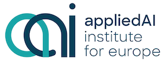

A pioneer in scholarly, open access publishing, MDPI has supported academic communities since 1996. Headquartered in Basel, Switzerland, MDPI has the mission to foster open scientific exchange in all forms, across all disciplines. We operate currently over 400 diverse, peer-reviewed, open-access journals supported by over 66,000 academic editors. We serve scholars from around the world to ensure the latest research is openly and broadly available. Besides our main publishing business, we develop and maintain digital platforms and software ranging from scientific exchange platforms to article databases and search engines, all focused on empowering scholars and giving them the best possible product and service. As of the end of 2022, we count more than 6700 colleagues in 17 offices across 11 countries.

appliedAI Institute for Europe The appliedAI Institute for Europe aims to strengthen the European AI ecosystem by engaging in research, developing knowledge around AI, providing trusted AI tools, and creating educational as well as interactive formats around high-quality AI content. As a non-profit subsidiary of the appliedAI Initiative, the Institute was founded in Munich in 2022. The appliedAI Initiative itself is a joint venture of UnternehmerTUM and IPAI. The Institute is managed by Dr. Andreas Liebl and Dr. Frauke Goll. The appliedAI Institute for Europe focuses on the people in Europe. It pursues the vision of shaping a common AI community and providing high-quality content in the age of AI for the entire society. By promoting trustworthy AI, the Institute accelerates the application of this technology and strengthens trust in AI solutions. With a focus on research, knowledge development, research and the provision of trusted AI tools, the appliedAI Institute for Europe provides a valuable resource for companies, organizations, and individuals looking to expand their knowledge and skills in AI. Through educational and interaction formats, the Institute enables an intensive exchange of expertise and fosters collaboration between stakeholders from different fields. The appliedAI Institute for Europe invites companies, organizations, startups, and AI enthusiasts to benefit from the Institute's diverse offerings and resources. The appliedAI Institute for Europe is supported by the KI-Stiftung Heilbronn gGmbH. For more information, please visit www.appliedai-institute.de